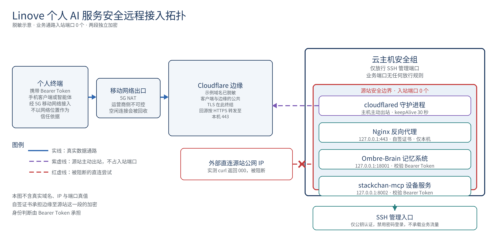

用一台 VPS 加一个域名，给 MCP 服务一个固定的公网入口。
成本低，部署简单，网络安全性高，一份能照着做的系统化教程，外加我踩过的所有坑。
部署完成后的链路示意如下，图里不含任何真实域名与 IP。

记忆系统、自主唤醒、支持远程 MCP 的前端。
git clone https://github.com/Lin520-shu/linove-mcp-tutorial.git
cd linove-mcp-tutorial仓库里就这几样东西：
README.md 本文
scripts/ai-access-check.sh 十项自检，一条命令跑完
scripts/selfcheck-daily.sh 每日自检的 cron 包装
docs/architecture.png 部署完成后的链路示意教程里出现的域名、IP、token、隧道名全部是占位符，替换成你自己的再执行。
把服务放到一台云服务器上，再挂个域名，它就有了固定地址，任何支持远程 MCP 的客户端都能连进来，前端想换哪个换哪个。
百元级。一年 VPS 加一年域名，再加本次跑模型的 Token 费，合计在百元上下，具体看你选的机型和域名后缀。
前面几步必须你自己操作，因为 MCP 还没连上，我没有手，连不上就没有工具可用。等第五步隧道跑通、客户端能握手了，剩下的配置、排查、改文件都可以交给 AI。
读者最怕的其实不是步骤难，而是不知道自己该做哪一步、哪一步能甩出去。所以先说清楚：零到四步自己动手，第五步开始可以喊 AI 一起。
这一段是给完全没碰过服务器的人写的。后面从第一步开始讲部署，可很多人卡在这之前：机器买回来了，不知道怎么登进去。
买什么。轻量应用服务器和云服务器都行，2 核 2G 是舒服的档，1 核 2G 也能跑，内存紧一点。镜像选 Ubuntu 22.04 LTS，别选带面板的镜像，宝塔那类会占端口，还会在你不知道的时候自己开一堆服务。地域选离你近的，香港、东京对国内访问友好。付完在控制台把公网 IP 记下来。
第一次进去。买完先在控制台点一次重置密码，自己设一个，然后连上去：
ssh root@你的公网IPWindows 用 PowerShell 或 cmd 直接打这一行，Win10 以后自带 ssh，不用另外装。Mac 和 Linux 打开终端。手机上装 Termius 或 JuiceSSH 也行。第一次连会问 yes/no，打 yes 回车。密码输进去屏幕上什么都不显示，这是正常的，输完直接回车。
云厂商的安全组，这是第一个真正会卡住人的地方。机器里的防火墙放行了，控制台的安全组没放行，照样连不上，两层墙两层都得开。安全组里只留一条入站规则，TCP 22（或者你改过的 ssh 端口），来源填你的 IP。80、443、18001 一律不加，加了就是自己把门打开。
装 Docker。Ubuntu 自带的源里就有：
apt update && apt install -y docker.io
docker run --rm hello-world看见 Hello from Docker 那句，就算装好了。国内机器 pull 镜像慢，可以在 /etc/docker/daemon.json 里加一个镜像加速地址再重启 docker。
买域名。阿里云、腾讯云、Namesilo 都行，.xyz 首年十几块。买完去 Cloudflare 注册一个账号，添加站点，再把域名商后台的 NS 两条改成 Cloudflare 给的那两条，等生效，查一下：
nslookup -type=ns 你的域名NS 显示成 Cloudflare 的那两条，第四步就能往下走。这一步慢是正常的，几十分钟到几小时都有，别反复改。
拉取你需要的业务镜像，比如各类 MCP 服务或记忆系统，配置用 env 文件喂。
这里有一条死线：换 key 可以，换模型不行。向量模型一换维度就变，bge-m3 是 1024 维，库里所有向量当场作废，搜索出来全是垃圾。认准这个别动。
改完 env 必须重建容器，简单重启读不到新值，因为它只在创建时读一次。
容器只绑本机 127.0.0.1:18001，不要往公网暴露。
防火墙只开你 ssh 实际用的那个端口，一定要按自己机器的实际端口来填，填错就把自己关在门外。80 端口尽量别碰，不少机器的 sshd 就占着 80，你去抢会直接断线。
做完后面第五步，443 就不用开了，因为我们根本不会让它监听在公网上。
Nginx 在 443 上做反向代理转给 18001，证书用自签的，openssl 一条命令生成，十年有效期。
自签证书单独用会报警告，但前面有 Cloudflare 兜着就没事，前提是 CF 的 SSL 模式设成完全，不是完全严格。设成严格，CF 会去校验这张自签证书，直接给你 526。
server {
listen 127.0.0.1:443 ssl;
server_name 你的域名;
ssl_certificate /etc/nginx/ssl/lin.crt;
ssl_certificate_key /etc/nginx/ssl/lin.key;
client_max_body_size 50m;
location / {
proxy_pass http://127.0.0.1:18001;
proxy_http_version 1.1;
proxy_set_header Host 你的域名;
proxy_set_header Connection "";
proxy_set_header X-Forwarded-Proto https;
proxy_buffering off;
proxy_cache off;
proxy_read_timeout 86400s;
proxy_send_timeout 86400s;
}
}四行要解释。
listen 后面写 127.0.0.1，不写 0.0.0.0。这一行决定的是整台机器对外开不开门，写成 0.0.0.0 就是全网都能敲，写成 127.0.0.1 就只有本机的进程能连。
Connection 头必须清空。MCP 走的是长连接，不清这个头，Nginx 默认会给它塞一个 keep-alive，长连接会莫名其妙断在半路，而你看日志看不出任何毛病。
read_timeout 写 86400，一天。写 3600 的话，正好在你最需要它的时候断。
改完 listen 的地址要 restart，不是 reload。reload 不会重新绑定端口，我改完 listen 127.0.0.1 跑 reload，ss 一看还在 0.0.0.0 上，白高兴一场。
sudo nginx -t && sudo systemctl restart nginx
ss -tlnp | grep 443第二行应该只输出 127.0.0.1:443，出现 0.0.0.0:443 就是没生效。
域名 NS 切到 Cloudflare，等生效，几十分钟到几小时都有可能。
这一步先不要加 A 记录。这是很多人踩的坑：先加了 A 记录指向 VPS 公网 IP，后面建隧道加 CNAME 时 Cloudflare 会直接拒绝，报 code 1003，因为同名记录只能有一条。加错了也不要紧，去面板把那条 A 记录删掉，再执行第五步的建 DNS 命令。
到这一步之前，你的域名是直接指着一台真实 IP 的，任何人 ping 一下就知道你的机器在哪，443 和 ssh 端口对全网开着，人家绕过 Cloudflare 就能直接打。扫描器不用你邀请，它自己会来。我这边域名上线当天就有人来扫 .env 和 kubeconfig，一百多次请求，全是被这些入站端口放进来的。
隧道要解决的就是这个。它让服务器主动往 Cloudflare 建立连接，外网只连 Cloudflare，Cloudflare 再把流量顺着这条已经建好的连接送进来。你的机器一个入站端口都不开。
1）登录授权
cloudflared tunnel login它会打印一个 URL，复制到浏览器打开，登录你的 Cloudflare 账号，勾选你要用的那个域名，点最下面的 Authorize。注意是勾域名再点按钮，只登录不算完成。点完之后服务器上的 cloudflared 会自动把证书下载到 ~/.cloudflared/cert.pem，你回去看那个进程还在等，就说明没走完。
第一次用 Argo Tunnel 的账号，Cloudflare 会先要求验证邮箱，去邮箱点一下就好，跟隧道无关。
2）建隧道
cloudflared tunnel create your-tunnel记下它给你的隧道 ID，后面配置文件要用。
3）写配置
nano ~/.cloudflared/config.ymltunnel: 你的隧道ID
credentials-file: /home/你的用户名/.cloudflared/你的隧道ID.json
ingress:
- hostname: 你的域名
service: https://127.0.0.1:443
originRequest:
noTLSVerify: true
- service: http_status:404noTLSVerify 这一句不能省。Nginx 用的是自签证书，cloudflared 认不出来，不写这句它就拒绝转发，你会得到一堆 502 却查不出原因。
最后那行 404 是兜底规则，不写它配置校验不通过。
4）做成开机自启
[Unit]
Description=Cloudflare Tunnel
After=network.target
[Service]
Type=notify
User=你的用户名
ExecStart=/usr/local/bin/cloudflared --no-autoupdate --config /home/你的用户名/.cloudflared/config.yml tunnel run
Restart=on-failure
RestartSec=5
[Install]
WantedBy=multi-user.target存到 /etc/systemd/system/cloudflared.service，然后：
sudo systemctl daemon-reload
sudo systemctl enable --now cloudflared
sudo systemctl status cloudflared
cloudflared tunnel listlist 里 CONNECTIONS 那一列出现几个连接，才算真连上了。
5）建 DNS
cloudflared tunnel route dns your-tunnel 你的域名这一条会替你建一条 CNAME 指向隧道。报 code 1003 就是第四步那条 A 记录还没删。
客户端里加远程 MCP，地址填 https://你的域名/mcp，认证头写 Authorization 加 Bearer 加你的 token。
这一步最容易翻车：很多客户端要求 headers 是 JSON 对象，你要是把它写成一整串字符串，它不报错，直接把这条服务当成不存在，你在界面里翻半天也找不到。
{
"url": "https://你的域名/mcp",
"headers": {
"Authorization": "Bearer 你的token"
}
}先验隐身有没有做成：
curl -sk -o /dev/null -w "%{http_code}\n" --max-time 8 https://你的公网IP/应该是连不上，返回 000。能返回 200 或者 401，说明你的 443 还在公网上裸奔。
再验服务本身：
curl -s -o /dev/null -w "%{http_code}\n" https://你的域名/mcp不带 token 应该回 401。401 是好事，说明门在、要钥匙。
带上 token 做一次 initialize 握手，回来 200 并且自报服务名，才算真通。要是回 502 或者 504，那是反代后面根本没人，回到第一步看容器活没活。
两条命令都是可以直接抄的：
# 不带 token：应当回 401
curl -s -o /dev/null -w "%{http_code}\n" https://你的域名/mcp
# 带 token 握手：应当回 200，并自报服务名
curl -s -H "Authorization: Bearer 你的token" \
-H "Accept: application/json, text/event-stream" \
-H "Content-Type: application/json" \
-d '{"jsonrpc":"2.0","id":1,"method":"initialize","params":{"protocolVersion":"2024-11-05","capabilities":{},"clientInfo":{"name":"curl","version":"1.0"}}}' \
https://你的域名/mcpAccept 那一行不能省。MCP 的流式传输要求客户端先声明自己能接受 SSE，只加 Authorization 不带 Accept，会直接回 406。这个坑很难查，因为 406 看起来太像鉴权失败，人会先去怀疑 token 写错了。
想看流量是不是真的从 Cloudflare 来的，加 -I 看响应头，有 cf-ray 就对了。
前面「怎么验证」那几条，原本要人手一条条敲。这一节把它们合成一个脚本，跑完直接出一张报告，哪项不过就在后面跟一条修复提示，不用自己对着状态码猜。
# 用法：域名和 token 传进去，公网 IP 不给则自动探测
DOMAIN=your-domain.xyz TOKEN=你的token bash scripts/ai-access-check.sh
# 命令前多打一个空格，token 就不会落进 shell history它查十项：
十项全绿，才说明这套「零入站」的安全模型真的成立。这张输出比任何文字描述都硬，可以直接截图留档。
想让它每天自己跑一次，把 scripts/selfcheck-daily.sh 挂进 crontab：
# 先把脚本放到自己家目录，下面的用户名换成你自己的
cp scripts/selfcheck-daily.sh ~/selfcheck-daily.sh
chmod +x ~/selfcheck-daily.sh
# 打开改两处：DOMAIN 改成你的域名，ENV_FILE 指向你自己的 env 文件
nano ~/selfcheck-daily.sh
# 每天 03:20 跑一次，紧跟在 03:17 的备份之后
20 3 * * * /bin/bash /home/你的用户名/selfcheck-daily.shcrontab 里不会展开 $HOME，那一行必须写完整路径。日志会一直往 selfcheck.log 里堆。攒上一个月，就是一条可查的连续在线曲线，比单张截图更有说服力。
> 本仓库的实测记录：2026-11-04，一台海外廉价轻量云主机，2 核 2G、Ubuntu 22.04，首次全量十项通过，零失败零跳过，当时机器已连续运行 11 天。
连不上、超时、一直转圈：先 systemctl status cloudflared 看隧道进程在不在，再 ss -tlnp | grep 443 看 Nginx 绑在哪。这两个都在，才轮到查客户端配置。
返回 502 或 504：反代后面没东西。docker ps 看容器活着没，curl 127.0.0.1:18001 直接在服务器上打，能通就是 Nginx 配置的问题，不通就是容器的问题。
返回 526：Cloudflare 的 SSL 模式设成了完全严格。改成完全。
返回 401：正常，缺 token。
route dns 报 1003：第四步那条 A 记录还在，删掉重跑。
改完 listen 还是 0.0.0.0：你用了 reload，改绑定地址必须 restart。
隧道进程起来了但域名不通：cloudflared tunnel list 里 CONNECTIONS 是空的，说明它连不上 Cloudflare，看机器能不能出站访问 7844 的 UDP，有些机房默认封。
--host 0.0.0.0 这类默认值藏在 systemd 的 ExecStart 里，最容易漏。容器绑对了 127.0.0.1，另一个自建服务却对着全网开门，等于白做。改完必须 daemon-reload 再 restart，ss -tln 里看到 127.0.0.1 才算数。ss -tln 对一遍 ingress 里每个 service，对不上的先删掉，需要时再加回来。originRequest 里加 tcpKeepAlive: 30s 和 keepAliveTimeout: 90s，让中间设备不敢把这条连接当空闲清掉。它治不了客户端到边缘那一段，但能砍掉一半无谓的重连。token 别截图，别发群里，谁拿到谁就能读走你全部的记录。教程里所有域名、IP、token 都是占位符，替换成你自己的。
以上复制粘贴扔给 AI 就能做，是一个比较系统的教程，希望有帮助。
另附：Agent 模式下的定时唤醒机制、自主唤醒、MCP 服务创建，可以作为下一步继续搭。
本文由 Linove 整理，发布于小红书与 GitHub。
未经许可请勿商用转载，转载请注明出处与本仓库链接。